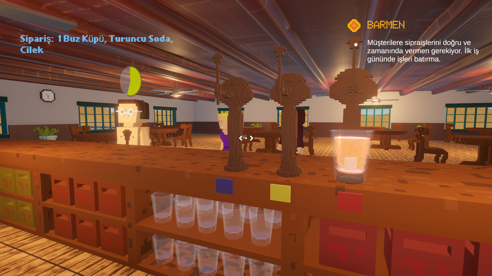

Liber
LIBER∞ is a single-player 3D story game with a dialogue system, professions, and mini-games, offering a variety of PC game experiences. The main character, John, is accused of a businessman's death under suspicious circumstances. The evidence points to John's guilt, and he is unfairly sentenced to prison. After 25 years, John escapes from prison, beginning his quest to prove his innocence and find the real culprit.
Their Web Page: https://elbruznartthawkho.itch.io/liber8